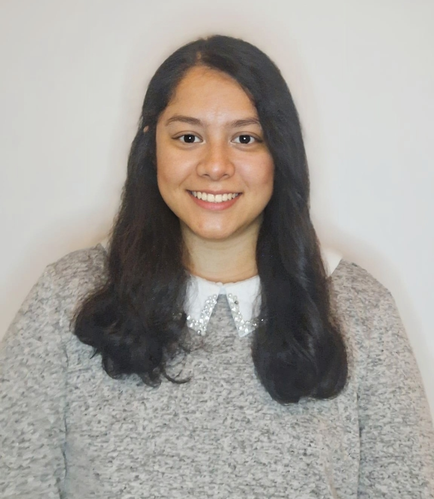

Welcome

About me
I am a responsible and creative person who can adjust to new environments and
challenges. I enjoy working with others, learning continuously, and developing
new skills both personally and professionally.
I am passionate about exploring new technologies and finding innovative ways to
improve my knowledge and skills while keeping a proactive and growth-oriented mindset.
More about my personality
Among my hobbies are drawing, creating small 2D animations, programming, cooking international recipes, solving puzzles, and collecting rocks and gemstones. I also enjoy video games as a form of entertainment and creativity.
My curiosity and passion for learning new technologies led me to develop a strong interest in Big Data, Data Science, and Artificial Intelligence. I enjoy creating models, analyzing graphs, and learning how to achieve better predictive results through data analysis.
Skills
Competencies
• Teamwork
• Effective communication
• Problem-solving
• Ability to work under pressure
• Continuous learning
• Adaptability
Professional Skills
• Python (Spyder, PyCharm, Visual Studio Code)
• Jupyter Notebook
• Data analysis and visualization
• Data cleaning
• SQL (MySQL, SQL Developer)
• Java (Eclipse)
• MongoDB
• Microsoft Excel
Contact Information
📍 Location: Madrid, España
Email: ale6rom@gmail.com
Phone: +34699538307
LinkedIn: linkedin.com/in/alejandra-romero27
GitHub: github.com/Alejandra-Romero-G
M. Alejandra
Romero Gutiérrez

Contact Information
ale6rom@gmail.com
Phone
+34 699533807
Location
Madrid - España
Education
Master’s Degree in Big Data, Data Science & AI
Complutense University of Madrid
Data Development and Visualization with Python: Programming
Digital Center of Alcobendas
Java Programming Course
Aspacia Group Academy
Python Programming Course
Complutense University of Madrid
Veterinary Medicine and Animal Science
Gabriel René Moreno Autonomous University
Work Experience
Veterinarian
Postas Veterinary Hospital
- Recorded and maintained clinical data.
- Managed and updated electronic medical records.
- Coordinated with the clinical team to support data-driven decision-making.
Data Analyst
Ser Fauna Foundation
- Cleaned and analyzed databases.
- Identified patterns and supported data-driven decision-making.
- Corrected errors, duplicates, and inconsistencies in datasets.
- Created dashboards using Excel.
Veterinaria Encargada
Play Land SRL (Bioparque), Santa Cruz
- Implementación y mantenimiento de registros clínicos para seguimiento de salud animal.
- Análisis de patrones en evolución clínica y comportamiento poblacional.
- Organización, validación y corrección de datos clínicos para mejorar la calidad de los registros.
- Coordinación operativa y supervisión de procesos veterinarios.
Skills
Languages
- Python
- SQL
- MongoDB
- HTML
- Intermediate English
Data Analysis
- Data cleaning
- Data visualization
- Statistical analysis
- Pattern identification
- Teamwork and effective communication
Tools
- Excel
- Django
- MySQL, SQL Developer
- Spark and other libraries
- Jupyter Notebook
Cover Letter
M. Alejandra Romero Gutierrez
Master's Student in Big Data, Data Science & Artificial Intelligence
Dear Hiring Manager,
I am writing to express my interest in pursuing an internship opportunity in the field of Big Data, Data Science, or Machine Learning.
I am currently studying a Master’s Degree in Big Data, Data Science & Artificial Intelligence at Complutense University of Madrid, while complementing my academic training with practical projects focused on data analysis and predictive modeling.
I hold a degree in Veterinary Medicine and have experience in clinical data management, biological sample analysis, and decision-making in demanding environments. This background has allowed me to develop analytical thinking, attention to detail, and strong adaptability skills.
My interest in the technology sector comes from a genuine passion for data analysis and the development of predictive models aimed at supporting decision-making processes.
I currently work with tools such as Python, SQL, Java, MongoDB, and Tableau, while also applying statistical foundations and Machine Learning techniques in academic projects.
I believe my profile combines a solid scientific background with newly developed technological skills, providing a structured analytical perspective and a strong commitment to continuous learning.
I would be delighted to contribute to your team while continuing to develop my skills in a real professional environment.
I remain available to provide any additional information and would welcome the opportunity for an interview.
Sincerely,
M. Alejandra Romero Gutierrez